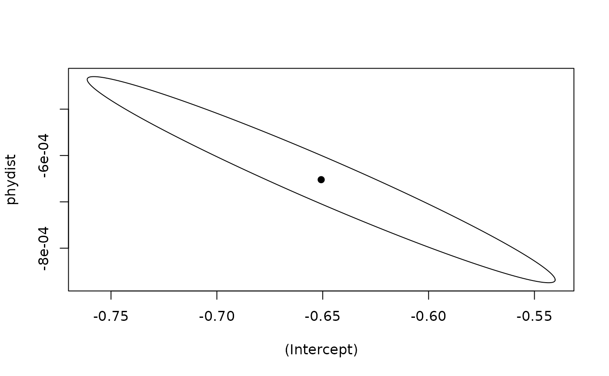

Joint confidence ellipse for intercept and slope
Source:R/phylopred_confidence_ellipse.R
phylopred_confidence_ellipse.RdComputes the boundary of the joint confidence region ("ellipse") for a
pair of coefficients, either from a fitted glm (using the
asymptotic covariance matrix) or from a
cluster_bootstrap_phylopred object (using the empirical
covariance of the bootstrap draws, which respects parasite-level
clustering).
Usage
phylopred_confidence_ellipse(
object,
terms = c("(Intercept)", "phydist"),
level = 0.95,
n_points = 200
)Value
A data.frame with n_points rows and two columns named after
terms, tracing the ellipse boundary. The center (point estimates)
is returned as the "center" attribute.
Examples
# Three parasites keep the example fast
top <- names(sort(table(beetleTreeInteractions[[1]]),
decreasing = TRUE))[1:3]
sub <- beetleTreeInteractions[
as.character(beetleTreeInteractions[[1]]) %in% top, ]
pairs <- prepare_pair_data(sub, phy_dist)
#> Warning: 5 interaction record(s) dropped: host not in 'phydist'.
# From a glm: asymptotic ellipse
fit <- glm(suscept ~ phydist, data = pairs, family = binomial())
ell <- phylopred_confidence_ellipse(fit)
plot(ell, type = "l")
points(t(attr(ell, "center")), pch = 19)
# From a cluster bootstrap
boot <- cluster_bootstrap_phylopred(pairs, n_boot = 5, seed = 42)
ell_b <- phylopred_confidence_ellipse(boot)
lines(ell_b, lty = 2)
